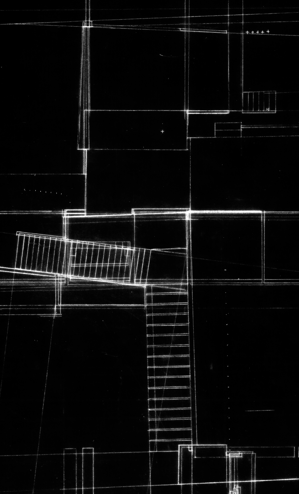
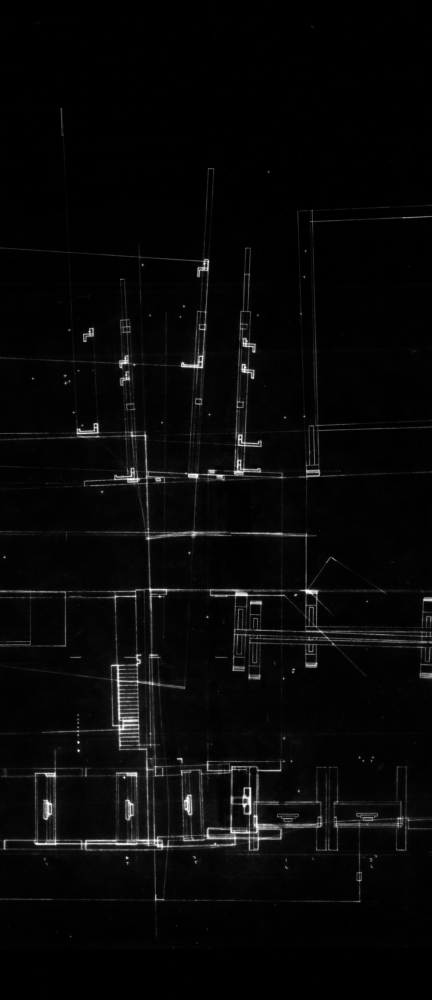
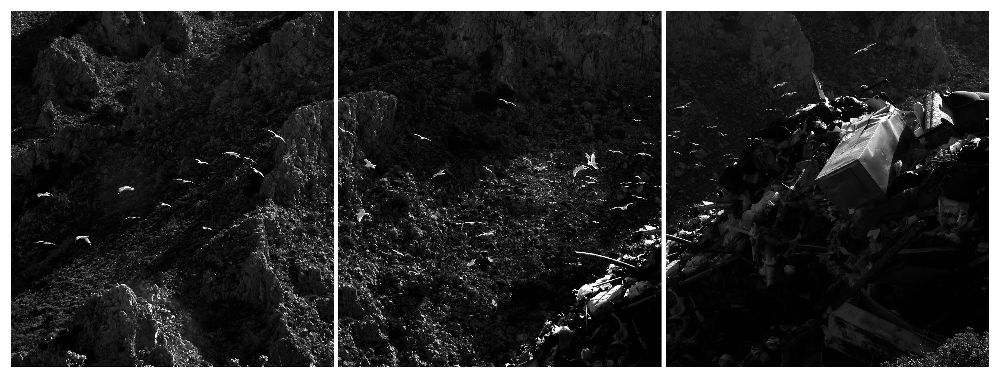
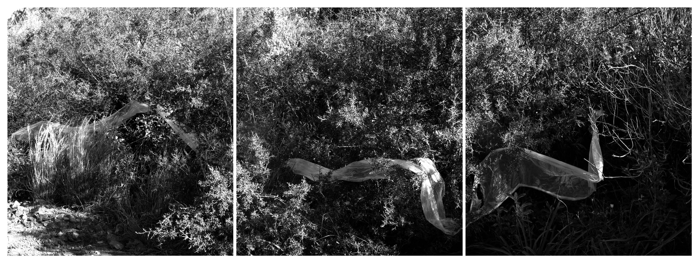
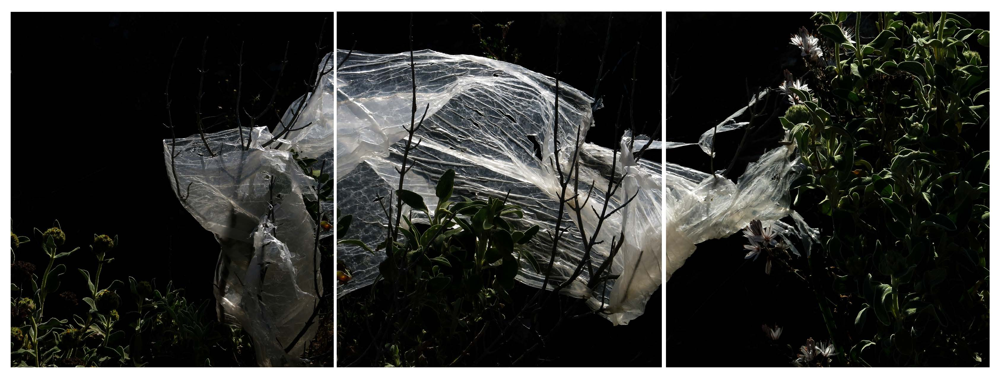

Exploring and Challenging the Concept of Place through Interdisciplinary Lenses: Drawing and Photography. The work was created during a study trip to the island of Hydra, Greece, under the title: Simultaneous Places – Simultaneous Spaces. March 2020 - August 2025, Hydra (GR)

Laminar drawing (2022)

Detail of drawing(2020)

Detail of drawing (2020)

Triptykon (2020)

Triptykon (2020)

Triptykon (2020)